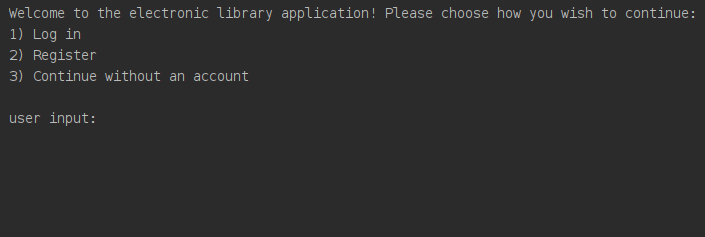
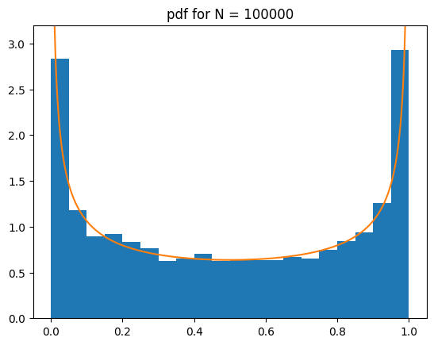

[user@user-web ~/projects]$ Poniżej znajdują się skrótowe opisy wszystkich najważniejszych aplikacji, zrealizowanych samodzielnie lub z pomocą innej osoby. Projekty nieinformatyczne można znaleźć, klikając w jeden z linków powyżej.
Warcaby
Link. Aplikacja napisana w Javie w architekturze klient-serwer, z zachowaniem zasad GRASP, pozwalająca dwóm graczom stoczyć potyczkę w warcabach. Ewentualnie, pojedynczy gracz może spróbować swoich sił przeciwko komputerowi. Najciekawszy fragent kodu jest widoczny poniżej — wykozystanie wzorca Singleton do oszczędności pamięci planszy:
for (int y = 0; y < height; ++y) {
final ArrayList<Square>row = new ArrayList<>();
for (int x = 0; x < width; ++x) {
row.add(new Square(x, y));
}
SQUARES.add(row);
}
Biblioteka
Szkielet aplikacji bazodanowej, która umożliwia zarówno pracownikom jak i klientom korzystanie z usług bibliteki elektronicznej (tj. przeglądać książki, czytać je, filtrować po wybranych kryteriach, ale też i edytować stan magazynu pracownikom). Celem tego projektu było stworzenie własnej bazy i aplikacji jej obsługujących

Pac-man
Prosta aplikacja napisana w Bashu, dzięki której użytkownik może zagrać w minimalistyczną wersję gry Pac-man. Głównym celem projektu było opanowanie "escape sequences" w terminalu na linuksie.
Błądzenie losowe po liczbach całkowitych
Program numerycznie wyznacza rozkład procentu czasu spędzonego nad osią OX podczas błądzenia losowego dyskretnego. Na wykresie widać porównanie otrzymanego rozkładu z rozkładem arcusa sinusa.

Mastermind
Gracz wymyśla kod złożony z 4 liczb, a komputer odgaduje hasło na podstawie pytań oraz odpowiedzi. Program napisany w języku C